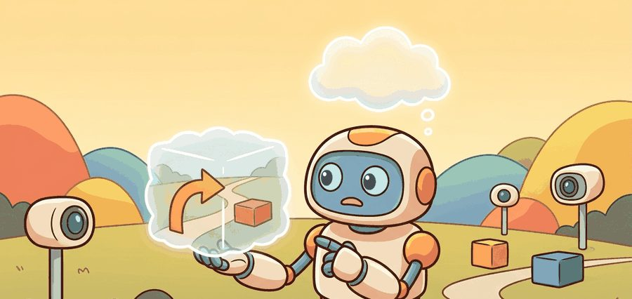
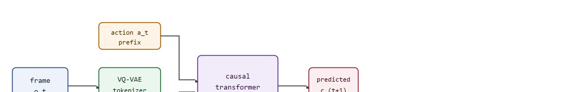

"The tokenizer is not preprocessing; it is the alphabet the world model is allowed to think in."
A Latent Sequence That Behaves Like Language

A game agent trained entirely inside a transformer's imagination reaches human-level Atari scores without ever touching the real environment during training. That result, from IRIS, matters for embodied AI right now: as robots face richer, more structured visual environments, the fixed-size hidden states of recurrent world models increasingly bottleneck long-range reasoning. IRIS reframes world modeling as autoregressive sequence prediction over discrete image tokens, the same core idea powering large language models. The pipeline developed here compresses frames into token codes, conditions a causal transformer on action sequences, and tests whether the generated futures stay faithful enough to train a real controller.
Read this section by following the tokenization pipeline. First compress frames into discrete codes, then prepend actions to the token sequence, then ask whether causal attention keeps enough temporal structure to support control from imagination.
The tokenizer is not a preprocessing detail. It defines the alphabet the world model can think in, so it directly limits what control-relevant structure the transformer can preserve.
Imagine an agent that must remember a key it saw two hundred frames ago. Its entire memory of the world is squeezed into a single vector that gets overwritten at every step. This is the pressure point where recurrent world models bottleneck long-range structure, because they summarize history in a fixed-size hidden state. Transformer world models test a different bet: whether image-token sequences and causal attention capture temporally extended dependencies more faithfully, especially when the environment behaves like a structured visual language. As Figure 38.4A frames it, a prediction earns its keep only if it changes action selection and then survives contact with reality.
IRIS discretizes visual observations with a tokenizer, then models action-conditioned token sequences autoregressively:
$$c_t = \mathrm{Tokenizer}(o_t), \qquad p(c_{t+1} \mid c_{\le t}, a_{\le t}) = \prod_i p(c_{t+1,i} \mid c_{\le t}, a_{\le t}, c_{t+1,
Why discretize at all
Discretization matters for embodied AI because a finite codebook forces the model to commit to a symbolic description of each frame before predicting the next one. Continuous latents can drift smoothly in ways that look plausible but accumulate compounding errors over a multi-step robot plan; discrete codes snap each frame to a fixed vocabulary entry, making prediction errors visible as codebook mismatches rather than silent floating-point creep. For a physical robot, that early-failure signal is actionable: a wrong code at step two stops the rollout before a 20-step arm trajectory is invalidated at execution.
Turning that snap-to-vocabulary intuition into a trainable component requires a specific architecture that can quantize a frame and still be optimized end to end. The mechanism is a Vector Quantized Variational Autoencoder (VQ-VAE): an encoder maps each frame to a continuous embedding, which is then replaced by the nearest vector in a learned codebook. Only the index of that nearest vector is stored and passed to the transformer. A straight-through gradient estimator propagates the loss back through the discrete bottleneck during training, updating both the encoder and the codebook entries.
The straight-through estimator is like a relay race where the baton is handed off abruptly at a checkpoint: the runner (gradient) cannot go back the way the baton came because the handoff was a sharp, one-way snap to whichever codebook slot was nearest. So training pretends the handoff was smooth, letting the gradient pass straight through as if no snap occurred, and the upstream encoder learns from that fiction. It is an admitted approximation, yet in practice it works because the encoder's continuous output stays close enough to the codebook vectors that the fiction introduces only small error.
This changes the inductive bias. A Recurrent State-Space Model (RSSM, a model that compresses history into one fixed-size vector that is overwritten every step rather than kept as a growing token list) assumes a compact hidden state should summarize the past; IRIS assumes the model can recover what matters by attending over a token history. The benefit is flexible long-range dependency modeling. The cost is quadratic sequence processing and a strong dependence on the tokenizer's ability to preserve the variables the controller needs.
For control, the model must still satisfy the same decision criterion as any world model: generated futures must be action-conditional, temporally stable, and sufficiently aligned with reward-relevant state that a policy trained in imagination transfers back to real trajectories.
Causal self-attention lets each predicted token attend to every prior token in the context window, so a token at step $t$ can directly compare the frame from step $t-20$ with the current action without routing that information through a fixed-size hidden state. This is the mechanism that makes IRIS better at long-range dependencies than RSSM in game environments where a key object disappears for many frames and then reappears.
So far: tokens replace pixels, a VQ-VAE with a straight-through estimator makes that tokenization trainable, and causal attention over the resulting token history is what lets IRIS reach back to distant frames instead of relying on a single fixed-size hidden state.
However, the same mechanism degrades in two identifiable conditions. First, when the rollout horizon exceeds the context window, earlier tokens are dropped entirely and the model loses access to whatever state they encoded; this is not graceful compression as in a recurrent model but hard truncation. Second, at inference time the quadratic cost of attention over long token sequences means that control-loop latency grows with horizon, making real-time robot control at 10-30 Hz impractical unless aggressive key-value caching and sequence chunking are applied. RSSM avoids both problems by design, so the choice of architecture is not about which model is better in general but about whether the task horizon and latency budget favor flexible attention or compact recurrence.
Encode each frame into discrete visual tokens, interleave or condition on action tokens, roll the sequence forward with a causal transformer, then decode the predicted tokens or use them directly for policy learning. The tokenizer is not a side detail; it defines the symbolic alphabet the world model reasons over.

Having traced that pipeline as a diagram, the fastest way to feel why the action prefix matters is to run the smallest possible version of it by hand. The probe below mirrors the core IRIS idea with toy tokens. It rolls a short token sequence forward under actions and checks whether the generated symbol stream still preserves the task-relevant state transition pattern.
# Roll a tokenized world state forward under action-conditioned updates.
# The token history acts like a tiny visual language for the world model.
token_state = [3, 7, 2]
actions = [1, 0, 2]
generated = []
for action in actions:
next_token = (token_state[-1] + action + token_state[0]) % 10
generated.append(next_token)
token_state = token_state[1:] + [next_token]
print({"generated_tokens": generated, "final_context": token_state}){'generated_tokens': [6, 3, 1], 'final_context': [6, 3, 1]}
Expected behavior: The generated token pattern should depend on both the rolling context and the chosen actions. If changing the actions barely changes the sampled future tokens, the model has become a passive video predictor instead of an action-conditioned world model.
Trace the probe loop with the exact starting values token_state = [3, 7, 2] and actions = [1, 0, 2]. The update rule is next = (token_state[-1] + action + token_state[0]) % 10, then the oldest token is dropped and the new one appended.
Step 1 (action 1): context [3, 7, 2], last token 2, first token 3, so next = (2 + 1 + 3) % 10 = 6. Append 6, drop the front: context becomes [7, 2, 6].
Step 2 (action 0): context [7, 2, 6], last 6, first 7, so next = (6 + 0 + 7) % 10 = 13 % 10 = 3. Slide: context becomes [2, 6, 3].
Step 3 (action 2): context [2, 6, 3], last 3, first 2, so next = (3 + 2 + 2) % 10 = 7. Slide: context becomes [6, 3, 7]. Generated stream: [6, 3, 7].
The takeaway: swap action 1 for a 4 in step 1 and the first generated token jumps from 6 to 9, which then reshapes every later context. That cascade is exactly the action sensitivity a usable world model must show; a passive video predictor would emit nearly the same tokens regardless of the action prefix.
The from-scratch token loop takes about 10 lines. In practice, a maintained transformer stack such as transformers or the official IRIS repository collapses the same pattern to a few API calls while handling causal masks, batching, key-value caching, and optimizer scaffolding internally.
A transformer world model can look impressive while the tokenizer quietly deletes the variables that matter for action. If token changes do not reflect action changes, the model is doing video language, not control.
A concrete failure path illustrates the risk: on an Atari-style task, a tokenizer with too few codebook entries can typically cause the model to generate visually smooth rollouts that nonetheless assign nearly identical token sequences to "ball approaching paddle" and "ball past paddle." A policy trained in imagination on such a tokenizer would then have little signal by which to distinguish those states, and in practice tends to perform far worse on the real game than its low next-token prediction loss would suggest. The diagnostic is action-sensitivity testing: hold the token history fixed and perturb only the action prefix; if the sampled future tokens do not diverge within two or three steps, the tokenizer is the bottleneck, not the attention depth.
When configuring the IRIS tokenizer, start with a VQ-VAE codebook of at least 512 entries (the official IRIS codebase default is 512 with embedding dimension 256). Dropping below 256 entries typically collapses the ball-position and agent-boundary distinctions that the policy needs, producing the "visually smooth but control-blind" failure described above.
Conversely, codebook sizes above 1024 rarely improve action sensitivity further but do increase the sequence length per frame, which compounds the quadratic attention cost at planning time. If you see codebook collapse during training (monitored via the codebook usage metric in the IRIS repo's Tokenizer.from_pretrained trainer logs), raise the commitment loss weight beta from the default 1.0 to 2.0 before resizing the codebook.
In an Atari-style control benchmark, a transformer world model can attend to a longer token history than a compact recurrent state, which helps when distant events still matter for the next reward. In robotics, that same flexibility is attractive for long-horizon visual context but becomes costly if the control loop needs low latency or multi-camera tokens at high frequency.
The frontier question is whether token-based world models can scale from game-like visual dynamics to real embodied systems without losing the tight action semantics required by robots and vehicles. Three active 2024-2026 directions illustrate where the field is moving:
Open problem for PhD students: All three directions assume the tokenizer and world model are trained on data from the same or similar embodiments. A tractable open question is how to build a tokenization scheme that is transferable across robot morphologies, so that a codebook learned on a Franka gripper usefully initializes a world model for a Spot quadruped without full retraining. The key challenge is that contact geometry, joint topology, and camera placement differ enough that shared pixel reconstruction loss produces codebooks with disjoint semantics rather than shared abstractions.
For tokenizer and representation issues, relate this section to Chapter 40. For sequence-model planning and decision transformers, compare with Chapter 26. For simulator benchmarks where IRIS became prominent, revisit Chapter 12.
A world model that predicts the right pixels but the wrong tokens is not a world model; it is a video generator that happens to sit upstream of a policy.
IRIS matters less because transformers always beat recurrent models and more because it reframed world modeling as discrete sequence prediction. That move lets researchers borrow a mature toolkit from language modeling: tokenization, causal masking, long-context studies, and sampling diagnostics. The payoff is concrete. IRIS (2022) reached human-level performance on 10 Atari games in the Atari 100k benchmark, where "100k" names the sample budget: only 100,000 real environment steps are allowed before scoring. A model-free baseline such as Rainbow (a value-based deep RL method that combines several Q-learning improvements but, unlike IRIS, learns only from real environment steps, with no imagined rollouts) needs around 200 million frames to match those scores on the same games, so IRIS cuts real interactions roughly 2000-fold in the data-limited regime. To put that gap in physical terms: 200 million frames at 30 Hz translates to about 77 days of continuous robot operation, whereas 100,000 frames is under an hour, the difference between a robot that learns before lunch and one that learns after a semester.
The hidden engineering challenge is semantic granularity. Tokens that are too fine map onto tiny texture differences, so the model looks visually sharp but stays weak for control. Tokens that are too coarse erase subtle collision, grasp, or lane-position cues. Tokenization is where the vocabulary shapes the vision, and control relevance is won or lost.
Choosing your token granularity is a bit like choosing the resolution of a map: too fine and you spend all your attention on individual cobblestones; too coarse and the cliff edge and the bike lane look identical. The robot then drives confidently off the cliff, which is visually coherent but not especially useful.
A common assumption is that IRIS inherits general-purpose reasoning from its transformer architecture and should transfer readily from Atari to physical robots. That assumption is wrong. IRIS's transformer operates over discrete visual tokens from a pixel-reconstruction VQ-VAE. That tokenizer captures no proprioceptive state, contact forces, or multi-camera geometry. A transformer reasons only over the tokens it receives. Substituting robot sensor streams for game frames requires redesigning the tokenization pipeline from scratch, not swapping in a larger model. IRIS reframes world modeling as sequence prediction over a learned visual vocabulary. That vocabulary must be rebuilt for each new sensory modality and task domain before the transformer can reason about it.
Can you name one task where token attention is likely to beat a compact recurrent state and one robotic setting where the attention cost may be harder to justify than the extra memory is worth?
DeepMind's Genie 2 (2024) productionizes the IRIS recipe at scale: it tokenizes diverse internet video and rolls out playable, action-conditioned 3D worlds generated from a single prompt image, using the same autoregressive-over-discrete-tokens move IRIS introduced on Atari. The system lets a controllable agent be dropped into a freshly imagined environment, demonstrating that tokenize-then-predict survives the jump from game pixels to open-ended visual scenes.
Goal: empirically observe how codebook size controls whether a tokenized world model stays action-conditional or collapses into a passive video predictor.
Tools needed: Python, gymnasium[atari] with the Breakout environment, PyTorch, and the official IRIS repository (github.com/eloialonso/iris). Budget 15-30 minutes once the repo's pretrained tokenizer checkpoint is downloaded.
What to vary: retrain or reconfigure the VQ-VAE tokenizer at three codebook sizes (128, 512, 1024 entries), keeping the transformer fixed. For each, run the imagination rollout while holding the token history constant and sweeping only the action prefix across all available actions.
What to observe: log the KL divergence (a measure of how much two probability distributions differ) between next-token distributions produced by different actions. You should typically expect it to shrink toward zero as the codebook drops to 128 (control-blind collapse) and grow as you reach 512, then plateau by 1024, though the exact thresholds depend on the game and training run. Confirm the collapse visually by decoding rollouts: check whether the 128-entry model assigns nearly identical token streams to "ball approaching paddle" and "ball past paddle," the failure the section warns about.
Transformer world models succeed when tokenization and action conditioning preserve the semantics the controller needs, not merely when the sampled frames look coherent.
Propose a benchmark that would fairly compare an RSSM and a transformer world model on the same embodied task. Which three metrics must be matched so that the comparison says something about control rather than only about visual generation?
Hafner, D. et al.. "Mastering Diverse Domains through World Models." (2023). https://arxiv.org/abs/2301.04104
DreamerV3 is the natural recurrent comparison point when assessing IRIS-style architectures.
Micheli, V., Alonso, E., and Fleuret, F.. "Transformers Are Sample-Efficient World Models." (2022). https://arxiv.org/abs/2209.00588
IRIS is the foundational reference for tokenized transformer world models in this chapter.
Eloi Alonso et al.. "IRIS GitHub Repository." (2022). https://github.com/eloialonso/iris
The codebase is useful for seeing how tokenization, transformer rollout, and policy learning fit together.
Beginner (weekend): Atari action-sensitivity probe with the IRIS codebase. Clone the official IRIS repository, train the tokenizer on a single Atari game such as Breakout using the provided scripts, then write a short diagnostic loop that holds a fixed token history and sweeps action inputs, logging whether the predicted token distribution shifts as expected. The key challenge is interpreting codebook collapse: if all actions produce near-identical next-token distributions, you must decide whether to raise the commitment loss weight or enlarge the codebook before the world model is usable for planning.
Intermediate (1-2 weeks): Gymnasium continuous-control tokenizer comparison. Adapt the IRIS VQ-VAE tokenizer to a Gymnasium MuJoCo task such as HalfCheetah-v4 by replacing pixel frames with proprioceptive state vectors, discretize them into 256 or 512 codebook entries, and train a causal transformer to predict future codes under action conditioning. The key challenge is that continuous proprioceptive signals do not partition naturally into a finite codebook the way game pixels do, so you will need to tune the encoder architecture and codebook size to preserve velocity and joint-angle distinctions that matter for locomotion reward.
Intermediate (1-2 weeks): Multi-camera token fusion for a LeRobot manipulation task. Take a LeRobot demonstration dataset recorded with a wrist camera and one overhead camera, encode each camera stream independently with a shared VQ-VAE, and compare naive sequence concatenation against a cross-attention pooling layer that produces a single scene-summary token per timestep before feeding the transformer world model. The key challenge is verifying that the fused token retains grasp-relevant geometry from the wrist view while the overhead view contributes object-position context, which you can test by measuring action sensitivity on held-out rollouts.